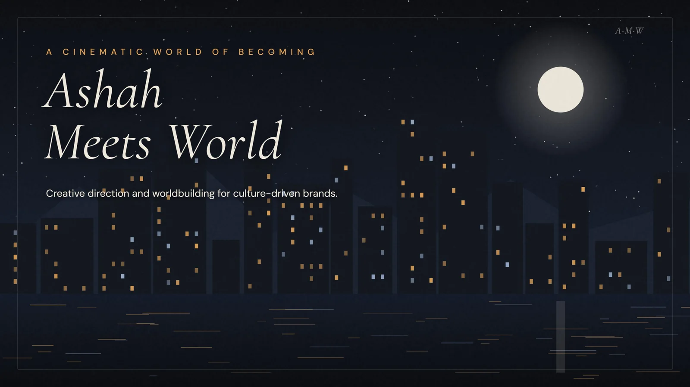
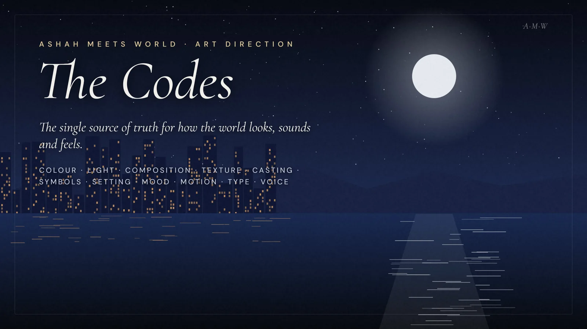

The work
Nobody swims open ocean on day one. A portfolio in motion, one lap further every session.
A value-carousel series that decodes brands, campaigns and cultural moments, built as a batchable content system in one visual world.

The founding document for Ashah Meets World — the tension, the thesis, the persona, the skill stack and the offer, each told through one illustrated metaphor.

An art-direction guide — the single source of truth for how the world looks, sounds and feels, written as do / don't pairs anyone can direct from.